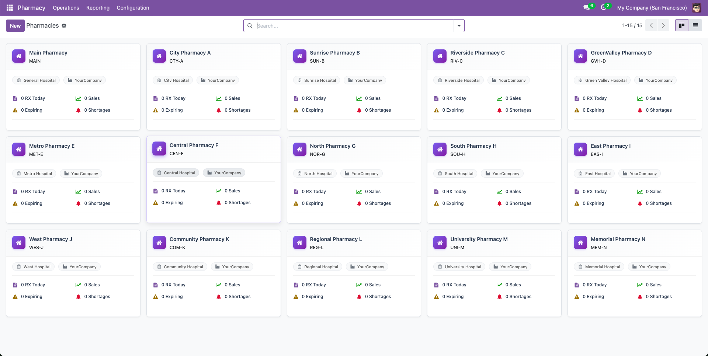
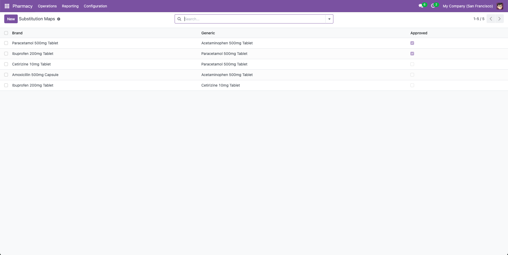

Pharmacy Management — Complete Hospital Multi-Branch Pharmacy System with Prescriptions, Claims & Compliance
Streamline Your Pharmacy Operations with Enterprise-Grade Management
Complete Pharmacy Management Solution
Pharmacy Management is a purpose-built Odoo pharmacy management app for hospitals and healthcare groups. It supports a true multi-branch pharmacy system and links directly with Odoo stock/warehouse to automate the entire prescription workflow — from prescription creation to picking, dispensing and invoice. This module is compatible with Odoo 16, 17, 18 and 19 and depends on core modules: base, contacts, mail, product, stock, stock_account, account, and sale_management.
Who this is for:
- Hospital pharmacists and pharmacy supervisors running multiple branches.
- Odoo implementers building hospital pharmacy software Odoo solutions.
- IT teams wanting Odoo pharmacy integration with stock/warehouse and API hooks.
- Organizations needing compliant controlled drug logging and chain-of-custody reports.
Why Choose Pharmacy Management?
Built specifically for healthcare facilities managing multiple pharmacy branches, this module eliminates the complexity of tracking prescriptions, managing drug inventory, processing insurance claims, and maintaining compliance across locations. It seamlessly integrates with Odoo's native modules for stock management, accounting, and sales, providing a unified platform for all pharmacy operations.
Key Benefits at a Glance
- Reduce stockouts with automated coverage and shortage alerts — pharmacy inventory optimization for hospitals.
- Improve compliance for controlled drugs with auditable logs — best practices for controlled substance logging baked in.
- Cut waste by monitoring expiries and recalls — how expiry tracking prevents medication waste.
- Faster patient throughput with portal uploads, telemedicine support, and automated invoice creation — clear benefits of pharmacy management software for hospitals.
Key Features (What Makes It Download-Worthy)
Prescription management: Create, approve and dispense prescriptions — full Odoo prescription management with image attachments and audit trails.
Multi-branch support: Handles parent hospitals and multiple pharmacy branches — true hospital multi-branch pharmacy system Odoo.
Inventory & expiry tracking: Lot tracking, expiry alerts and temperature logs for lots — Odoo medicine lot expiry tracking and Odoo pharmacy expiry alerts and reports.
Coverage & replenishment: Min/Target/Max coverage per hospital/pharmacy — pharmacy coverage min max qty Odoo with automated shortage alerts.
Controlled substances & compliance: Full controlled drug logging workflows and secure logs — supports Odoo pharmacy controlled substances compliance.
Prescription → Picking → Dispense → Invoice: Automated flow that creates pickings and invoices — supports Odoo pharmacy create picking dispense prescription and prescription to invoice automation in Odoo.
Insurance claims: Draft → Submit → Approve → Paid workflow for reimbursements — Odoo pharmacy insurance claims workflow.
Portal & patient uploads: Patient portal for prescription upload and reservation requests — patient portal prescription upload Odoo.
Treatment linking & telemedicine: Link prescriptions to treatments and support Odoo telemedicine pharmacy integration tokens for remote consults.
Reporting & KPIs: Prescription volume graphs, controlled activity logs, coverage dashboards — key pharmacy KPI metrics to monitor.
APIs & integration hooks: Ready for custom integrations — Odoo pharmacy API integration for third-party systems.
Multi-company & POS readiness: Works across companies and supports Odoo pharmacy POS & dispensing flows.
Admin & troubleshooting: Includes guidance for pharmacy.prescription sequence issues — pharmacy.prescription sequence Odoo troubleshooting.
Prescription Management
- Complete workflow (Draft → Approved → Dispensed)
- Multi-line prescriptions
- Automatic invoice generation
- Delivery picking creation
- Attachment support
Drug Inventory
- Drug catalog with categories
- Expiry date tracking
- Stock coverage per location
- Shortage alerts
- FEFO lot management
Multi-Branch
- Hospital management
- Multiple pharmacy branches
- Branch-specific KPIs
- Centralized control
- Warehouse integration
Insurance Claims
- Automatic claim linking
- Status workflow tracking
- Amount management
- Multi-provider support
- Reimbursement tracking
Compliance
- Controlled drug logging
- Full audit trails
- Timestamp records
- User tracking
- Regulatory reporting
Patient & Doctor
- Patient records
- Doctor/prescriber profiles
- License management
- Prescription history
- Treatment tracking
Reporting
- Prescription analytics
- Drug usage reports
- Pivot & graph views
- Shortage alerts
- Expiry monitoring
Integrations
- Odoo Stock integration
- Accounting integration
- Sales module support
- Portal integration
- API configuration
Prescription Management

Complete prescription lifecycle management from creation to delivery. Track prescription status (Draft, Approved, Dispensed, Canceled), manage prescription lines with quantities, link to patients and doctors, generate delivery pickings, and create invoices automatically. Full audit trail and attachment support for prescription documents.
- Auto-generated prescription numbers with sequences
- Multi-drug prescription lines with dosage instructions
- Partial dispensing support (qty_dispensed < qty_prescribed)
- Automatic stock picking creation for delivery
- Customer invoice generation from prescriptions
- Smart buttons for claims, controlled logs, and delivery
- Kanban view grouped by state for workflow management
- Search by drug name across all prescriptions
Drug Inventory & Tracking
Comprehensive drug catalog with category management, ingredient tracking, and storage temperature requirements. Monitor stock levels across hospitals and pharmacies, track expiry dates with automatic alerts for expiring lots, and manage drug coverage per hospital/pharmacy location. Support for controlled substances with special handling flags.
- Link drugs to Odoo products for inventory management
- Drug categories with controlled substance flags
- Active ingredient tracking with strength and units
- Storage temperature range (min/max) requirements
- Hospital and pharmacy availability (Many2many)
- Drug coverage with min/target/max stock levels
- Automatic expiry alert calculation (30-day window)
- Searchable "has expiring lots" filter
- Stock quantity computation from stock.quant
- Drug substitution mapping (brand to generic)
Multi-Branch Hospital & Pharmacy

Manage multiple hospitals and pharmacy branches with centralized control. Each branch can have its own warehouse, stock location, pricelist, and compliance certifications. Track KPIs per branch including daily sales, prescription counts, shortage alerts, and expiring lots. Support for parent-child pharmacy relationships and department management within hospitals.
- Hospital code and name management
- Default warehouse configuration
- API configuration for FHIR/HL7 integration
- Department management
- Smart buttons: Pharmacies, Prescriptions, Treatments
- Optimized KPI computation (read_group)
- Unique code per company (SQL constraint)
- Warehouse and location auto-derivation
- Default pricelist per branch
- Parent-child pharmacy relationships
- Real-time KPIs: RX today, expiring lots, shortages
- Compliance certificate tracking
- Kanban view with visual KPI cards
Insurance Claims Processing

Streamlined insurance claims management with automatic linking to prescriptions, patients, and insurers. Track claim status, amounts, and processing workflow. Integrated with patient insurance information for seamless claim generation and tracking across multiple insurance providers.
- Draft: Initial claim creation
- Submitted: Sent to insurance company
- Approved: Claim approved by insurer
- Paid: Reimbursement received
- Rejected: Claim denied
- Auto-fills patient from prescription
- Auto-fills hospital from prescription
- Auto-fills pharmacy from prescription
- Data consistency validation
Controlled Substance Logging

Comprehensive logging and tracking for controlled substances with timestamp records, quantity tracking, and full audit trails. Ensure regulatory compliance with detailed logs of all controlled drug transactions, linked to prescriptions, patients, and dispensing locations.
- Dispense: Controlled drug dispensed to patient
- Return: Controlled drug returned to pharmacy
- Destroy: Controlled drug destroyed/disposed
- Auto-generated log names with timestamps
- User tracking (who performed action)
- Quantity validation (must be > 0)
- Hospital/pharmacy consistency checks
- Indexed fields for fast reporting
- Full mail.thread integration for audit
Patient & Doctor Management

Extended partner management for patients and doctors with classification flags, license numbers, medical record numbers, and insurance information. Smart buttons showing prescription counts, treatment history, and related records. Support for patient types (adult, pediatric) and comprehensive doctor/prescriber profiles.
- Auto-generated patient codes (unique per company)
- Patient types: Adult, Pediatric
- Clinical data: Blood type, allergies, medical history
- Emergency contact information
- Insurance company linking
- Smart buttons: Treatments, Prescriptions
- Kanban view grouped by patient type
- License number (unique per company)
- Medical specialty tracking
- Default pharmacy assignment
- RX count tracking (total and by pharmacy)
- Optimized KPI computation
- Kanban view grouped by default pharmacy
Portal Requests & Messaging

Patient portal integration for prescription requests, refills, and communication. Track portal requests with status workflow, attachment support, and messaging capabilities. Enable patients to submit requests and communicate with pharmacy staff through the Odoo portal.
- Upload: Patient uploads prescription/document
- Reservation: Drug reservation request
- Query: Patient inquiry/question
- New → Processing → Done
- Attachment support for documents
- Kanban view grouped by state
- Message configuration for notifications
Reporting & Analytics

Comprehensive reporting dashboards with prescription KPIs, availability reports, and controlled substance logs. Pivot and graph views for analyzing prescription trends, drug usage, and operational metrics across hospitals and pharmacy branches.
- Prescription Volume (graph & pivot)
- Insurance Claims Analysis
- Controlled Drug Activity Logs
- Drug Coverage Analysis
- Treatment Progress by Stage
- Prescription by Doctor
- Shortage Alerts Report
- Expiring Lots Report (30-day window)
- Resource Availability Report
- Pivot views for multi-dimensional analysis
- Graph views for trend visualization
- Group by: Hospital, Pharmacy, State, Date
- Filter by date ranges and status
- Export capabilities
Treatment Management

Complete treatment episode management with stage-based workflow, telemedicine support, and prescription linking. Track treatment progress, duration, and compliance. Support for patient portal visibility and compliance flagging for audit purposes.
- Stage-based workflow (customizable stages)
- Telemedicine session management
- Prescription linking (Many2many)
- Duration calculation (start/end datetime)
- Vitals snapshot (JSON field)
- Portal visibility control
- Compliance flagging
- Activity log for audit trails
- Kanban view grouped by stage
Return & Refund Management

Manage product returns with quarantine tracking and automatic refund generation. Link returns to source invoices, track return reasons, and generate credit notes automatically. Support for disposal workflow and compliance tracking.
- Create return with source invoice
- Automatic refund (credit note) generation
- Quarantine state: Awaiting → Disposed
- Quantity validation (> 0)
- Refund linked to original invoice
Alert & Monitoring System

Configurable alert rules for various pharmacy events including expiry alerts, stock shortages, product recalls, and controlled substance monitoring. Scoped alerts can target specific companies, hospitals, pharmacies, drug categories, or individual drugs.
- Expiry: Drug expiry date alerts
- Stock: Low stock level alerts
- Recall: Product recall notifications
- Controlled: Controlled drug monitoring
- Company-wide alerts
- Hospital-specific alerts
- Pharmacy branch alerts
- Drug category alerts
- Individual drug alerts
Resource Availability & Scheduling

Staff scheduling and resource availability management for pharmacists and technicians. Create shift templates for recurring schedules, manage availability slots, and link to treatments. Calendar view for visual scheduling and overlap prevention.
- Shift templates for recurring schedules
- Resource types: Pharmacist, Technician
- Time slot management (start/end times)
- Capacity and slot duration settings
- Overlap prevention for published slots
- Calendar view for visual scheduling
- Treatment linking
- State workflow: Draft → Published → Completed
Typical Use Cases
- Hospital networks managing multiple pharmacy branches across different locations.
- Pharmacy chains requiring centralized inventory management and prescription tracking.
- Healthcare facilities needing compliance tracking for controlled substances.
- Pharmacies processing insurance claims and managing patient billing.
- Institutions requiring comprehensive drug inventory with expiry management and alerts.
Installation & Compatibility
Odoo Compatibility
Compatible with Odoo 16, 17, 18 & 19.
System Requirements
- Python: 3.10+
- Database: PostgreSQL
Dependencies
base, contacts, mail, product, stock, stock_account, account, and sale_management.
Installation Steps
- From Apps: Search Pharmacy Management, click Install, optionally Load Demo Data.
- Manifest check: Verify __manifest__.py contains supported versions (e.g., "version": "19.0.1.0.0" or compatibility markers) and "installable": True.
- Configure defaults: Set default hospitals and warehouses for users — see set up warehouses for pharmacy Odoo guidance.
Version note: If you maintain separate branches/uploads per Odoo version on the marketplace, ensure the marketplace listing reflects 16, 17, 18 & 19 support.
Technical Specifications
Database Features
- Multi-company support with data isolation
- SQL constraints for data integrity
- Indexed fields for performance
- Unique constraints per company
- Cascade deletes for related records
Performance Optimizations
- Batch KPI computation (read_group)
- Reduced N+1 query problems
- Optimized search domains
- Computed fields with store=True
- Efficient related field usage
Security & Compliance
- Access control lists (ACL)
- Record rules for data security
- Audit trails (mail.thread)
- User activity tracking
- Company-based data isolation
Integration Points
- Odoo Stock (pickings, moves, quants)
- Odoo Accounting (invoices, refunds)
- Odoo Sales (pricelists)
- Odoo Portal (patient requests)
- API configuration (FHIR/HL7)
Best Practices
- Configure warehouses and stock locations for each pharmacy branch to enable accurate inventory tracking.
- Set up drug coverage thresholds (min, target, max) per hospital/pharmacy to automate shortage alerts.
- Enable expiry alerts and regularly review expiring lots to minimize waste and ensure patient safety.
- Use controlled substance logging for all regulated drugs to maintain compliance and audit trails.
- Link prescriptions to insurance claims for streamlined billing and reimbursement processing.
Support & Customization
We offer documentation, configuration guides, and support for setting up your pharmacy management system. If you need custom integrations, additional reporting, or workflow modifications to meet specific regulatory requirements, our team can extend the module to fit your needs.
FAQs
Q: Which Odoo versions are supported?
Q: Can it handle multiple hospitals and companies?
Q: Does it track controlled substances?
Q: How do expiry alerts work?
Contact & Support
Have Any Question ?
Sales : +91 (942) 867-7503